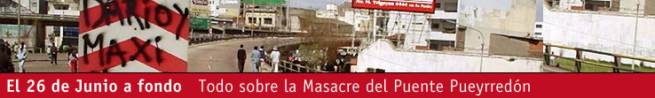

Viernes, 6 de Mayo de 2005
La comisaría, el hospital y el local partidario: “lo mismo que en el 76”
“Cuando atravesaron el hall de la comisaría primera de Avellaneda y se asomaron al primer patio, el diputado Villallba y el abogado Palmeiro sintieron que habían traspasado algo más que un espacio físico: que habían retrocedido en el tiempo a la dictadura militar, al campo de Auschwitz, al caos del hospicio de Charendon o del más criollo y perverso asilo Montes de Oca”, relató Miguel Bonasso en el diario Página/12 del 30 de junio. Las cifras son contundentes: 160 detenidos, de los cuales 52 eran mujeres, siete de ellas embarazadas. 43 de los arrestados eran menores de edad. Once de ellos, con heridas de plomo o goma, causantes de daños suficientemente graves como para que hayan tenido que ser trasladados, aun en condición de detenidos, al hospital.
Ni la sensación que relata el periodista Bonasso ni las cifras precisas alcanzan para dar la real magnitud de lo que se vivió aquella tarde en Avellaneda. Pasados los primeros días de temor e incertidumbre, más relajados una vez que las evidencias públicas señalaban con claridad a los asesinos y represores, los compañeros se fueron acercando a la Fiscalía a dejar constancia judicial de lo que habíamos padecido:
Roberto Rojas tiene 25 años, integra el MTD de Varela y sufrió la represión en familia: “Una de las camionetas frena y nos detiene a mi mamá, a mi hermana, a mi cuñado y a mí. Ahí nos hacen poner boca abajo. Mi hermana se descompone y queda sentada en la vereda mientras que a los hombres nos ponen boca abajo, nos gritan ‘zurdos de mierda’ y a mí un policía me da patadas en las costillas y en los tobillos. Después, me suben a un patrullero junto a otro muchacho y nos llevan a la seccional 2ª de Avellaneda, donde encuentro a mi mamá, a mi hermana y a mi cuñado. Ahí nos llevan al patio de hombres. Íbamos pasando por un pasillito cuando me agarra un policía de uniforme, gordo y petiso, y me hace desnudar. Me saqué la ropa. El policía me pide los cordones, una cadenita de plata con un dije con forma de cruz, no muy grande, y un anillo también de plata que era de mi abuela. Cuando le pregunto al policía si le tenía que dar todas esas cosas, me contesta:’¿qué querés? ¿que te de un ticket?’ Después, me dijo que me vistiera y fuera al patio con los demás. Me vestí, pero jamás recuperé ni la cadenita, ni los cordones ni el anillo. Ahí vino un policía y nos dijo: ‘Bueno muchachos, ya cobraron. Ahora no les va a pegar nadie más. ¿Vieron qué ganaron por venir a joder? Esto es Avellaneda.” Exp. Jud. Foja 771
A Gustavo Fernández, de 30 años, no le respetaron siquiera su discapacidad: “Que el declarante corría con dificultad ya que sufre de una discapacidad motriz en su brazo y pierna izquierda. Que mientras ingresaba a la seccional segunda y con motivo de la dificultad que tiene para caminar, trastabilló y cayó en el suelo, momento en el cual tres policías comenzaron a pegarle patadas por todo el cuerpo, para luego levantarlo a los empujones. Que el declarante se encontraba muy preocupado ya que sufre de epilepsia y temía sufrir una convulsión. Que en el patio de la comisaría un policía que se encontraba detrás suyo le colocaba una escopeta en la nuca y gatillaba sin salir disparo alguno, otros policías también lo golpeaban en las costillas, ya que los obligaban a tener las manos en la nuca y en virtud del problema que sufre en su brazo izquierdo, este miembro se bajaba, no pudiendo mantenerlo en la posición que le exigían los policías. Que durante su detención se encontró muy atemorizado ya que su médico siempre le aconseja no recibir golpes en la cabeza”. Exp. Jud. Foja 768.
Esteban Campos, 25 años, los escuchó cantar sobre “la parrilla” y la vuelta al 76: “Que al salir del galpón [donde se habían refugiado] uno de los policías le aplicó un rodillazo en la zona hepática. Que a medida que los obligaban a formar les sacaban las mochilas. Que el declarante llevaba entre otras pertenencias una radio portátil AM FM marca Sony y por lo menos 3 cajas de remedios, ya que sufre una deficiencia hormonal. Que mientras se encontraba contra la pared, le pidió a otro policía que necesitaba tomar la medicación que se encontraba en su mochila y le explicó que si así no lo hacía, su vida corría peligro. Que este policía le contestó en forma textual: ‘Eso a mi no me interesa’. Que también escuchó gritar a otro policía en voz alta ‘Esto es Avellaneda’.
Al ingresar a la seccional los hicieron formar primero en un pasillo y mientras esperaban en el lugar, el dicente junto con los demás detenidos recibían apremios psicológicos por parte de los uniformados, quienes hacían comentarios en voz alta diciendo: ‘Les va a pasar lo mismo que en el 76’, ‘Los vamos a poner en la parrilla’, y entonaban cánticos diciendo ‘Volveremos volveremos, como en el 76”. Exp. Jud. Foja 802.
Nancy Slupsky tiene 39 años y se movilizó con el MTD de Almirante Brown: “Vino un sujeto vestido de jean, zapatillas, buzo polar rojo y una Itaka, al que después reconocí a través de los medios como Leiva. Con él vinieron otros policías. Se metieron en el baño [de la estación de servicio Shell, sobre Pavón, donde estábamos cinco compañeras escondidas] y comenzaron a sacarnos. Yo le dije a Leiva que no estábamos haciendo nada, y él nervioso me dijo ‘No me forrees’ y ‘Te faltan asambleas’. Cuando nos trasladaban, yo les grito a los que estaban en la parte delantera del micro, que la chica que iba conmigo se estaba por desmayar. Leiva me dice ‘Hija de puta, por mí que se muera, tirala por ahí’. Después nos bajan en una comisaría. Había un chico tirado en el piso, esposado y sangrando”. Exp. Jud. Foja 513.
Omar Pinola, de Lanús: “Cuando dobla hacia la izquierda y es emboscado por varios patrulleros es detenido por personal policial, sin ofrecer ninguna resistencia. Un policía uniformado le da vuelta el brazo derecho y se lo coloca en la espalda. Luego otra persona de civil, con una escopeta en la mano, lo agarra de los cabellos y lo entra a sacudir; que ante esta situación el dicente pierde estabilidad y cayéndose es retenido de los cabellos por esta misma persona, la cual luego de levantarlo de los cabellos lo suelta y le propina un golpe en la cabeza con el caño de la escopeta. Luego de recibir el golpe en la cabeza el dicente es arrojado al piso contra una pared. En ese lugar recibe otros golpes, como patadas en la espalda. Es llevado a la comisaría 2ª, siendo bajado lo ponen en un pasillo interno y lo hacen desnudar por completo junto a tres hombres más. Una vez desnudos, los colocan contra una puerta y les pegan trompadas en la espalda”. Exp. Jud. Foja 407.
Esteban Ciarlo tiene 20 años, es estudiante de la Universidad de Buenos Aires y fue al Puente Pueyrredón para hacer un trabajo práctico sobre los piqueteros para la materia Antropología Sistémica. “Al escuchar disparos es que deciden salir corriendo [de un galpón] con las manos en alto. Y en ese momento es que el dicente recibe un golpe en el abdomen. Que el policía que lo golpeó con la escopeta vestía de civil, que continúa caminando y al pasar al lado de otro policía éste lo golpea con un palo en la espalda y otro policía le pega luego otra patada en el trasero que le provoca la caída boca abajo sobre la acera. Que estando el dicente en esta posición logra escuchar que un policía grita: ‘Bolches, les va a pasar lo mismo que en el 76.” Exp. Jud. Foja 514.
Marcelina Montiel tiene 35 años, doce hijos, y participa en el MTD de Solano. “En la comisaría 2ª a las mujeres nos hicieron desnudar y nos obligaron a quedarnos sentadas en el piso casi media hora”, cuenta.
Edgardo Ferrari, de la Plata, después de ser detenido por el parapolicial Robledo fue entregado a un agente de Infantería que lo sometió al método de tortura conocido como submarino seco en un descampado. Lo patearon hasta dejar su rostro cubierto de sangre, mientras lo interrogaban. Apoyaron el caño frío de la Itaka en su cabeza y simularon disparar. “Pensé que me iban a matar”, contó después a sus compañeros.
Los testimonios se repiten por decenas, y muestran la forma en la que, autorizada o alentada para hacerlo, La Bonaerense detuvo ilegalmente, golpeó, torturó y se jactó de añorar la dictadura militar. Los testimonios que señalan indistintamente a una cantidad variada de efectivos certifican que “No es un policía, es toda la institución”, como dice una campaña antirrepresiva de Correpi. Las edades de los oficiales involucrados en el accionar ilegal y delictivo, como el cabo Acosta (26), el cabo Colman (32), el oficial inspector Sierra (25) o el oficial De la Fuente (26), señalan, además, que tal desenvolvimiento no es solamente fruto de la policía de la dictadura. Son oficiales egresados en los 90, de esta policía de la democracia que sigue formando criminales en sus filas7.
El estado de sitio que rigió de facto en la ciudad de Avellaneda aquella tarde tuvo otros dos capítulos destacados: el asalto al local de Izquierda Unida por tropas bonaerenses y la conversión del hospital Fiorito en una base de operaciones de la Policía.
Después de las corridas y los disparos del grupo de tareas que comandó Leiva por la avenida Mitre, algunos manifestantes buscaron refugio en el local del Partido Comunista de la calle Brandsen al 1.200, tres cuadras más allá de plaza Alsina. Habían logrado entrar unos 50 compañeros, cuando cinco patrulleros hicieron chillar los frenos a lo largo de toda la calle, cruzando las camionetas en ele y bajando, armas en mano, en actitud de combate. Desde adentro del local buscaron trabar la puerta con sus propios cuerpos. Por eso Manuel Herrera recibió varios impactos de plomo –dos en los muslos y otros en la billetera– cuando uno de los bonaerenses disparó un nuevo itakazo, eyectando uno de esos cartuchos rojos que tanto se preocupaban en recoger. Los nueve perdigones dieron en la puerta y la atravesaron. Después del disparo terminaron de abrir el local a patadas, con un único cuidado: “Pará que están sacando fotos”, le dijo el oficial Gaiser al sargento Reguera, quien dio el botinazo final a la vieja puerta de madera y quedó retratado en la cámara del fotógrafo Pablo Piovano de Página/12.
También se habían preparado para entrar por las casas vecinas y desde los techos amenazaban a todos a punta de escopeta para que se tiraran al piso “boca abajo y con las manos en la nuca”. Mariano Benítez quiso obedecer, pero lo cierto es que se demoró porque no encontraba lugar en el piso que ya estaba cubierto de compañeros. Entonces, cuando estaba en cuclillas, entró el cabo Colman y disparó, a quemarropa, sobre su cabeza. Las postas de goma dieron de lleno en su cuero cabelludo, produciéndole quemaduras y una herida tal que tuvieron que llevarlo desmayado, sangrando por la cabeza, hasta el hospital. Diez meses después, Mariano sigue bajo tratamiento médico, con ataques de pánico por las secuelas que le produjo la represión.
Entre quienes se hicieron presentes para evitar el salvajismo policial, estuvieron los diputados Luis Zamora y Vilma Ripoll, que a los gritos y empujones sacaron a los uniformados del lugar. Los agentes terminaron de huir en sus camionetas en medio de cascotazos que con bronca tiraban los compañeros que seguían acercándose para enfrentar la represión.
No fue más tranquila la situación en el hospital Fiorito, a pocas cuadras: los policías montaron allí su propia base de operaciones. Contaron para ello con la colaboración de la directora Adriana D’Astek, quien se mostró cómplice, permitiendo que en el hospital a su cargo los mismos policías que habían disparado detuvieran ilegalmente a quienes buscaban atenderse. También, durante toda la tarde evadió precisiones sobre el tipo de heridas de quienes iban ingresando: “No puedo decir si las heridas fueron provocadas por armas de fuego”, declaró, ocultando lo que los propios médicos sabían e informaban desde temprano. En el playón del estacionamiento del hospital, los comisarios Alfredo Fanchiotti y Félix Vega organizaron la primera conferencia de prensa, que fue interrumpida cuando recibieron los golpes de quienes, conociendo la existencia de dos muertos, no aguantaron la bronca y la dirigieron hacia donde correspondía.
<< Fusilando por la espalda · Listado de heridos de bala >>
Volver a Investigación
Este sitio es actualizado por
Prensa De Frente, Noticias de los movimientos populares por el cambio social
Prensa De Frente, Noticias de los movimientos populares por el cambio social
 A 39 meses masivo acto en Avellaneda
A 39 meses masivo acto en Avellaneda
Foto que falta
Hernàn Gurián y Alberto Santillán
gueri.jpg Foto: Los oradores del acto homenaje convocado por el Frente Darío Santillán fueron Hernán Gurián y -más atrás- Alberto, padre del joven asesinado.
Hernàn Gurián y Alberto Santillán
gueri.jpg Foto: Los oradores del acto homenaje convocado por el Frente Darío Santillán fueron Hernán Gurián y -más atrás- Alberto, padre del joven asesinado.
Criminalización: en Uruguay acusan de "sedición" a cuatro detenidos por protestas callejeras contra Bush
Foto que falta
Presos en Uruguay
urug.jpg El pasado viernes 4 de noviembre, en sintonía con las movilizaciones que se realizaron en Argentina, Venezuela y Brasil en repudio al proyecto del ALCA y la presencia de Bush en la Cumbre de las Américas, una protesta en el país hermano de Uruguay terminó con 16 personas detenidas y cuatro de ellos permanecen procesados con graves cargos. El actual Ministro de Agricultura del gobierno de Frente Amplio y ex-dirigente guerrillero José "Pepe" Mujica, reconoció al diario "El País" que el procesamiento de cuatro personas por el delito de "sedición" tras los hechos del pasado viernes en la Ciudad Vieja es una "exageración", aunque se negó a considerarlos "presos políticos". Leer artículo completo, clic acá
Presos en Uruguay
urug.jpg El pasado viernes 4 de noviembre, en sintonía con las movilizaciones que se realizaron en Argentina, Venezuela y Brasil en repudio al proyecto del ALCA y la presencia de Bush en la Cumbre de las Américas, una protesta en el país hermano de Uruguay terminó con 16 personas detenidas y cuatro de ellos permanecen procesados con graves cargos. El actual Ministro de Agricultura del gobierno de Frente Amplio y ex-dirigente guerrillero José "Pepe" Mujica, reconoció al diario "El País" que el procesamiento de cuatro personas por el delito de "sedición" tras los hechos del pasado viernes en la Ciudad Vieja es una "exageración", aunque se negó a considerarlos "presos políticos". Leer artículo completo, clic acá

Presentamos la reconstrucción en animaciones tridimensionales, fotos y videos de las tres secuencias sobre las cuales la fiscalía sustenta su acusación. Basados en los numerosos testimonios audiovisuales, los peritos de la Corte Suprema de la provincia de Buenos Aires trazaron hipótesis sobre cómo fueron asesinados Maximiliano Kosteki y Darío Santillán, y cómo fueron baleados los otros manifestantes sobre la avenida Pavón. Aquí, por primera vez, damos a conocer este material. Los videos en 3D, fotos y textos se pueden encontrar en la Sección Evidencias.
2002 - 2005, Tres años de impunidad
Cuando terminamos la primera edición de este libro, en mayo de 2003, habían transcurrido once meses desde la represión que se conoció como Masacre de Avellaneda. Para ese entonces pudimos dar cuenta de nuestra experiencia: relatamos los hechos desde la mirada piquetera, desde quienes fuimos perseguidos, baleados y asesinados por luchar por trabajo, dignidad y un cambio social. Describimos con minuciosidad los aprestos y el plan represivo, indagamos en la autoría ideológica y señalamos claramente a los responsables políticos, develando la serie de reuniones previas, directivas y complicidades necesarias desde las primeras líneas del gabinete presidencial que el propio Eduardo Duhalde encabezó días previos a la Masacre. También hurgamos en el expediente judicial, señalamos a fiscales cómplices del accionar policial y a jueces condescendientes con el poder político.